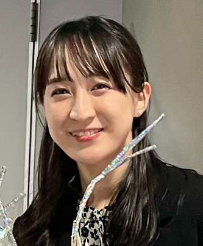

コース紹介 | Course Introduction
7-9歳 MESH体験コース
MESH Experience Course (Ages 7-9)
MESHを使って簡単なプログラミング体験ができます。 | Experience basic programming using MESH.
10-12歳 スクラッチコース
Scratch Course (Ages 10-12)
スクラッチを使ってゲームやアニメーションをつくります。 | Create games and music using Scratch!
プログラム内容 | Program Details
ソニーが開発したプログラミング学習教材「MESH」を使って、LEDを好きな色に光らせたり、音が鳴るびっくり箱を作ることができます。10歳以上からのコースで使用する「Scratch」は、子供が本格的なプログラミングをはじめるのにおすすめの教材です。プログラミング経験がなくても、ゲームや音楽、アニメーションを作ることができます！学習用の教材は授業中のみ貸し出しとなります。購入する必要はありません。
Using Sony's programming learning tool "MESH", you can light up LEDs in your favorite colors or create a surprise box that makes sounds. For courses aimed at children aged 10 and above, we use Scratch, an excellent tool for starting serious programming. Even with no prior programming experience, children can create games, music, and animations! The learning materials are provided during class, so there is no need to purchase them.

料金 | Pricing
- 1時間 25€ | 1 hour 25€
- 2時間 40€ | 2 hours 40€
- 兄弟や友達など＋1人 15€ | Additional sibling or friend 15€
指導言語 | Teaching Languages
日本語と英語から選べます。
You can choose between Japanese and English.
予約・お問い合わせ | Booking & Inquiries
Googleカレンダーのタイムスロットから予約できます。 | You can book a slot through Google Calendar.
WhatsAppでの問い合わせも受け付けています: +49 152 28305638
I also accept inquiries via WhatsApp: +49 152 28305638
講師情報 | Instructor Profile
前野真榛 | Maharu Maeno
子供向けのアートワークショップやプログラミング教育に携わってきました。日本語と英語での指導が可能です。
2020年東京芸術大学卒業。2023年ベルリン・ヴァイセンゼー美術大学修士課程修了。IoT×AIプログラミング専門スクールSwimmyおよび六本木のプログラミングスクールコトミライにて講師を務める。
Graduated from an art university and has been involved in children's art workshops and programming education. Can teach in both Japanese and English.
Graduated from Tokyo University of the Arts in 2020 and completed a master's program at Weißensee academy of art berlin in 2023. Worked as an instructor at Swimmy, a specialized IoT and AI programming school, and at Kotomirai, a programming school in Roppongi.